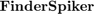

SOURCE : https://github.com/vladscript/FinderSpiker.git
Steps Guide
Contents
- 0. SETTTINGS
- 1. SIGNAL PROCESSING: Detect Calcium Transients Events
- 2. RASTER SELECTION & ACTIVITY FEATURES
- 3. CLUSTERING NEURONAL ENSEMBLES
- 4. COLOCALIZATION OF MARKED CELLS
- 5. RETRIEVE ORIGINAL SIGNALS from RASTER SELECTION
- N-EXPERIMENTS ANALYSIS
- 6. ACCUMULATE FEATURES FROM SEVERAL EXPERIMENTS
- 7. DATASETS MAKER
- 8 MAKE DATASETS FROM GEPHI NETWORK FEATURES
- 9 STACK DIVERS DATASETS
- 10 DATA FEATURE EXPLORER
- 11 MACHINE LEARNING:
- 12 EXPORT DATA:
0. SETTTINGS
- Import ALL functions >>Import_FinderSpiker
- Experiments Directory: >>edit Load_Default_Directories.m
- Deconvolution Parameters: >>edit Load_Default_Values_SP
- Clustering Parameters: >>edit Load_Default_Clustering
- Colors: >>edit SetColorMap.m
1. SIGNAL PROCESSING: Detect Calcium Transients Events
Getting Activation Matrix (raster) from Calium Imaging Data for each Cell DATA: VIDEOS, Sampling Frequency & Set of Coordinates
- >>FinderSpiker_Calcium % automatic deconvolution
- >>Detected_Visual_Inspection % GUI to reject False +
- >>Undetected_Visual_Inspection % GUI to reject False -
- >>Save_and_Plot % Save activity matrix
REVIEW DATA:
- >>Plot_Experiment % Plot current stage of analysis
2. RASTER SELECTION & ACTIVITY FEATURES
At Original Coordiantes Order
- >>Select_Rasters
Save CSV Raster-Features of Merged & NO-Merged Cells (Step 4):
- >>Select_Raster_PositiveCells;
- >>Select_Raster_NegativeCells
2.1 CHECK RASTER's Selection DURATIONs:
- >>RasterDurations=get_raster_durations(Onsets,R_Condition,fs);
2.2 TOTAL NETWORK (all cells)
Save Links Features Without neither Ensembling nor Thresholding
- >>Get_Total_Network UNDER CONSTRUCTION
Show Boxplots and Make Table of Features: ONLY TOTAL or POSITIVE(!)
- >>Links_Features_Display
2.3 RETRIEVE RASTER for ANALYSIS
- >>R=RASTER_Selected_Clean'; % ALL CONDITIONS CONCATeNATED
- >>R_CONDITION1=R_Condition{1}; % Cells x Frames (dim) ...
- >>R_CONDITIONi=R_Condition{i};
2.4 Plot Sorted by Rate of Activity
- >>[IndexSorteActivity]=plot_activityrate(R_Condition,Names_Conditions,fs);
2.5 Plot slopes of CAG accumulaive sum
- >>[M,B]=slopes_from_raster(R_Condition,fs,Names_Conditions)
- If Colocalization Data:
- >>[M,B]=slopes_from_raster(R_Condition,fs,Names_Conditions,MetaDataColocaliation) FinderSpiker_Calcium
3. CLUSTERING NEURONAL ENSEMBLES
AUTOMATIC MODE:
The cell variable 'R_condition' contains the activity matrices of each
experimental condition, e.g. >>R_CTRL=R_Condition{1};
Retrieve the activity matrices in new varaiables: R_CONDITION
- >>R_CONDITIONi_Analysis=get_bayes_ensembles(R_CONDITIONi);
CUSTOM MODE:
Set the coactivity threshold: 'CAGthreshold': integer number
Set the number of ensembles: 'Nensambles': integer number
- >>R_CONDITIONi_Analysis=get_ensembles(R_CONDTIONi,CAGthreshold,Nensambles);
3.1 DISPLAY, SAVE & EXPORT FEATURES ENSEMBLES ANALYSIS
Run and follow instructions:
- >> Ensemble_Sorting
Outputs: CSV features @'Ensemble Features' & CSV gephi @'NetWorks-CSV'.
3.1.1 Gephi Instructions (out of MATLAB):
- Create a New Project
- For each condition Create a Space Work
- Load NODES and EDGES in Space Work area
- Compute parameters: Clustering coeff., degree, weighted degree, etc.
- Save gephi project and
- Export Nodes Tables
3.2 DISPLAY ENSEMBLES SEQUENCE
Load a .mat file with saved ensemble analysis
- >>Plot_Hebbian_Stairs
3.2 FAST PLOT OF NEURONAL ENSEMBLES
Load a .mat file with saved ensemble analysis
- >> ImageEnsembles(R_ConditionNamej_Analysis,1); %with Hebbian Sequences
- >> ImageEnsembles(R_ConditionNamej_Analysis); %without
4. COLOCALIZATION OF MARKED CELLS
It requires to have run '>>Select_Rasters' & load .mat file @ worksapce
- >>Merge_Finder_Magic
Output variables: R_merged,R_nomerged,MetaDataColocaliation
Check Raster plots:
- >>Plot_Merged_NotMerged
Plot slopes of CAG accumulaive sum
- >>[M,B]=slopes_from_raster(R_Condition,fs,Names_Conditions,MetaDataColocaliation)
- >>[M,B]=slopes_from_raster(R_Condition,fs,Names_Conditions)
Plot slopes of POSITVE selected cells:
- >>plot_activitychange(R_merged,Names_Conditions,fs)
Update Selection of Raster with merged cells:
- >>Update_Mergeing;
5. RETRIEVE ORIGINAL SIGNALS from RASTER SELECTION
5.1 Display Signals:
0) Get Merged Coordinates (IF SO)
- >> XY_merged=XY_selected(MetaDataColocaliation.PositiveCells,:);
1) Plot Raster (without sorting) from:
- >>[Rsel,IndexSorted]=Retrieve_Selected_Signal(Onsets,R_Condition,RASTER,XY_subset,XY);
- >>Rjunto=[Rsel{1},Rsel{...},Rsel{NConditions}];
- >>Plot_Raster_Ensembles(Rjunto,fs)
- >>Label_Condition_Raster(Names_Conditions,R_Condition,fs);
2) Find Cell Signal of Interest: Ci
- >>[XS,IndexSorted]=Retrieve_Selected_Signal(Onsets,R_Condition,SIGNALSclean,XY_subset,XY);
- >>figure; plot(XS{c}(Ci,:))
5.2 Clean Video Output:
It requires script edition:
- >>Video_Cleaner;
N-EXPERIMENTS ANALYSIS
6. ACCUMULATE FEATURES FROM SEVERAL EXPERIMENTS
Choose One-by-One .mat Files-> Save .mat Files:
- >>Accumulate_Venn_Diagrams
Venn diagrams of cells:
> Unchanged,
> Activated and/or Facilitated,
> Depressed and/or Inhibited- >>Accumulate_Raster_Distances;
Hamming distance among active cells vectors
Save at CSV Files of Raster Features- >>Accumulate_RoA_IEI_ED;
CDF of:
RoA: Rate of Activity
IEI: Inter (calcium) Event Interval
ED: Event Duration
RoT: Rate of (calcium) Transients
Save CSV File Active Cells in Raster Features dir- >>Accumulate_Ensembles_RoEn_IEnI_EnD
CDF of:
RoE: Rate of (neuronal) Ensemble
IEI: Inter Ensemble Interval
ED: Ensemble Duration
Save CSV File Active Cells in Ensemble Features dir- >>Accumulate_Simm_Matrix
Hamming distance among ensembles
Save at CSV Files of Ensemble Features7. DATASETS MAKER
Make Tables for SINGLE EXPERIMENTS
7.1 RASTER FEATURES
- >>Raster_Features_Display
> Make CSV table @'Raster Features'
7.2 ENSEMBLES GENERAL FEATURES
- >>Ensembles_Features_Display
> Make CSV table @'Ensemble Features'
7.3 ENSEMBLES DETAILED FEATURES
- >>Ensembles_Features_Detailed_Display
> Make CSV table @'Ensemble Features'
7.4 LINKS FEATURES
- >>Links_Features_Display (building)
8 MAKE DATASETS FROM GEPHI NETWORK FEATURES
7.9 Export 'FEATURES' from Gephi (see 3.1.1)
>Data could be in '\NetWorks-CSV'
>For *Gephi* *0.9.1*8.1 Run the following in order:
- >>Get_Gephi_Data
>INPUT: CSV files one by one->use [cancel] button to set next condition
Save .mat File @ FinderSpiker/DatabaseFolder
>OUTPUT: File MyNetworkDataSet.mat Dataset
from CSV Gephi Workspaces (per Experiment)- >>Make_Statistics_Gephi_Features
>INPUT: MyNetworkDataSet.mat Files from @../DatabaseFolder
& Choose %FEATURE%: clustering, degree, moudularity, etc
>OUTPUT: Network_%FEATURE%_Dataset in CSV files:
'Network_%FEATURE%_Dataset_YYYYMMDDHHMM.csv'
It saves a CSV for each %FEATURE% of statistics (mean, variance, etc)- >>Concatenate_NetFeats
>INPUT: CSVs Network_%FEATURE%_Datasets of statistics
>OUTPUT: Node_StatsFeature_Dataset_YYYYMMDDHHMM.csv
Choose destination folder, e.g.: @FinderSpiker/DatabaseFolder8.2 Display node parameters per Experiment
- >>Display_NetworkPDFs;
>INPUT: MyNetworkDataSet.mat files
>OUTPUT: PDFs & CDFs plots9 STACK DIVERS DATASETS
Make DATASET by stacking several tables from divers experiments:
- >>Merge_Feature_Datasets
E.G. read datasets of different Experiments,i.e, CTRL, PARKINSON, DYSKINESIA, ...
Choose the kind of dataset:
[INPUT] [OUTPUT] -Raster Activity: Table_Raster_Features_ Raster_Activity_Dataset_ -General Ensembles: Ensemble_Features_ General_Ensembles_Dataset_ -Detailed Ensembles: Detailed_Ensemble_Features_ Detailed_Ensembles_Dataset_ -Network Features: Node_StatsFeature_Dataset_ Network_Features_Dataset
Makes directory 'FinderSpiker/Experimental Databases'
10 DATA FEATURE EXPLORER
10.1 Display All Features RAINPLOTS & Statistics
- >>Feature_Explorer UNDER CONSTRUCTION
11 MACHINE LEARNING:
- >>Classification_Regions
Makes PCA and SVM classification from
tables of 'Merge_Feature_Datasets'
Feauture selection and Model building12 EXPORT DATA:
- >>Export_Raster; UNDER CONSTRUCTION
Makes CSV of activity matrix to analyze elsewhere(e.g. ClustVis)
- >>Export_Signals; UNDER CONSTRUCTION
Makes CSV of fluorescence signals